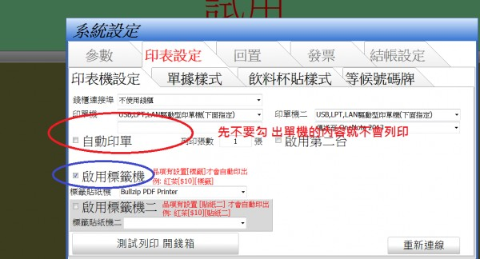
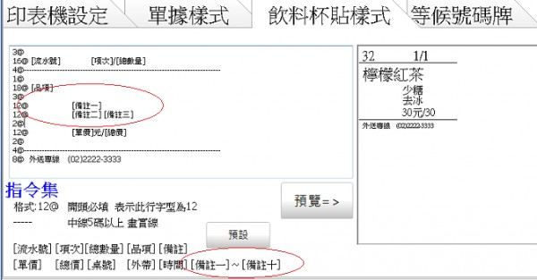
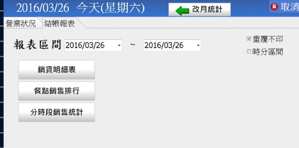

您好
猜想有兩個原因
1.不知您是否勾到自動印單?自動印單會印出單據內容,如果沒有印單機,請先取消"自動印單"

2.印單樣式沒有內容

請按下預設->預覽 ,看右方是否有貼紙預覽
如果一直試不成功,請再留言給站長知道
您好
猜想有兩個原因
1.不知您是否勾到自動印單?自動印單會印出單據內容,如果沒有印單機,請先取消"自動印單"

2.印單樣式沒有內容
請按下預設->預覽 ,看右方是否有貼紙預覽
如果一直試不成功,請再留言給站長知道
您好
1.貼紙機是否可正常在windows的記事本中直接印出?如果驅動程式
有安裝正確的話 ,應可印出在記事本中打出的字
如果無法正常印出,請安裝貼紙機所附的光碟片其中的驅動程式
2.貼紙的紙張是否設置正確?
控制台 ->硬體和音效->裝置和印表機
滑鼠右鍵 ->印表機內容 ->喜好設定
中設定紙張正確採用的貼紙紙張大小
3.如果一直都無法成功
請留下您的聯絡電話 和貼紙機型號
或Email至 advposys@gmail.com
站長會主動與您聯繫
您好
1.站長修改了程式,加了 [備註一] ~[備註十] 的巨集參數,
必須去首頁下載更新才會有此功能(更新方法如同安裝)

2.您指的"支出",是指店裡的進貨原料支出花費嗎?先用POS目前只有針對銷售統計報表功能,並無進貨方面等的功能
相關報表在打烊->結帳報表裡

以上 請參考